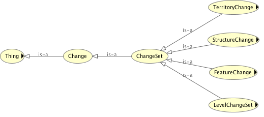
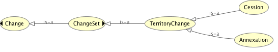
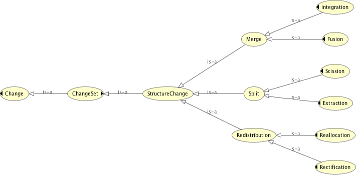
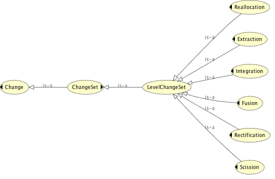
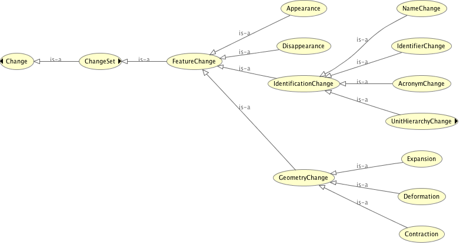

Prologue
Table of contents
Ontologies (2):
Territorial Statistical Nomenclature Change Ontology , Territorial Statistical Nomenclature Ontology
Classes (38):
AcronymChange , Annexation , Appearance , Cession , ChangeSet , Contraction , Deformation , Disappearance , Expansion , Extraction , FeatureChange , Fusion , GeometryChange , IdentificationChange , IdentifierChange , Integration , Level , LevelChange , Merge , NameChange , Nomenclature , NomenclatureFeature , NomenclatureVersion , Reallocation , Rectification , Redistribution , Scission , Split , StructureChange , SuperUnitChange , Territory , TerritoryChange , TerritoryVersion , TSNComponent , Unit , UnitHierarchyChange, UnitLevelChange , Version
Properties (46):
after , before , belongsToLevel , belongsToNomenclatureVersion , causes , covers , date , hasAcronym , hasDescription , hasGeometry , hasIdentifier , hasLevel , hasLowerLevel , hasName , hasSubUnit , hasSuperUnit , hasUnit , hasUpperLevel , hasVersion , input , inputLevel , inputNomenclatureVersion , inputTerritoryVersion , inputUnit , isCausedBy , isCoveredBy , isPredecessorOf , isSuccessorOf , isVersionOf , label , levelAfter , levelBefore , nomenclatureVersionAfter , nomenclatureVersionBefore , output , outputLevel , outputNomenclatureVersion , outputTerritoryVersion , outputUnit , referencePeriod , territoryVersionAfter , territoryVersionBefore , unitAfter , unitBefore , versionRights , versionSource
Individuals (8):
individual-48700105 , individual-48700106 , individual-48700107 , individual-48700108 , individual-48700109 , individual-48700110 , individual-48700111 , individual-48700112
Abstract
We present in this document two complementary ontologies TSN Ontology (Territorial Statistical Nomenclature Ontology) and TSN-Change Ontology (Territorial Statistical Nomenclature Change Ontology) to describe any Territorial Statistical Nomenclature (i.e., partitions of space into territorial units (e.g. administrative, electoral, statistical units).) and the changes it undergoes from one version to another.
Diagram of the ontologies
TSN Components 
TSN Feature 
TSN-Change ChangeSet main sub-classes 
TSN-Change ChangeSet - 1 - TerritoryChange 
TSN-Change ChangeSet - 2 - StructureChange 
TSN-Change ChangeSet - 3 - LevelChange 
TSN-Change ChangeSet - 3 - FeatureChange 
Ontologies
Territorial Statistical Nomenclature Ontology
Territorial Statistical Nomenclature Change Ontology
Territorial Statistical Nomenclature Change Ontology (Ontology)
This RDF ontology allows describing changes that occured between one version of a Territorial Statistical Nomenclature (i.e., partition of the territory) and its subsequent (e.g., change in territorial units boundaries to reflect an administrative reorganisation).
Version Control information
- Version
- 1.0
- Last modified
- Issued
- Creators
- Publishers
- License
- http://www.data.gouv.fr/Licence-Ouverte-Open-Licence
Definition
The URI of this ontology is http://purl.org/net/tsnchange#
| Preferred Namespace URI |
|
| Preferred Prefix |
|
Territorial Statistical Nomenclature Ontology (Ontology)
This RDF ontology allows describing any Territorial Statistical Nomenclature (i.e., partition of the territory) used as a support to the collect of statistical data. Statistical data that describe this territory in terms of population, unemployement rate, transport access, etc.
Version Control information
- Version
- 1.0
- Last modified
- Issued
- Creators
- Publishers
- License
- http://creativecommons.org/licenses/by/3.0/
Definition
The URI of this ontology is http://purl.org/net/tsn#
| Preferred Namespace URI |
|
| Preferred Prefix |
|
Classes
AcronymChange , Annexation , Appearance , Cession , ChangeSet , Contraction , Deformation , Disappearance , Expansion , Extraction , FeatureChange , Fusion , GeometryChange , IdentificationChange , IdentifierChange , Integration , Level , LevelChange , Merge , NameChange , Nomenclature , NomenclatureFeature , NomenclatureVersion , Reallocation , Rectification , Redistribution , Scission , Split , StructureChange , SuperUnitChange , Territory , TerritoryChange , TerritoryVersion , TSNComponent , Unit , UnitHierarchyChange , UnitLevelChange , Version
AcronymChange (RDFS Class)
The acronym of a NomenclatureFeature changes.
Definition
The URI of this class is http://purl.org/net/tsnchange#AcronymChange
| This class is a sub class of | IdentificationChange |
Annexation (RDFS Class)
A set of changes is called Annexation when, grouped together, the changes describe the transformation of the observed territory by incorporation of a region on the earth that was outside the external boundaries of the territory before the Annexation event. The Annexation event results in: (1) a new version of the observed territory (i.e., TerritoryVersion V+1) that incorporates a region on the earth that was outside the external boundaries of the TerritoryVersion V (i.e., modification of the external boundaries of the Territory); (2) one or several StructureChange; (3) one or several LevelChange that describe the Annexation event at each Levels resources impacted; (4) one or several FeatureChange on NomenclatureFeature resources (i.e., TerritoryVersion V and V+1 but also, one or several Unit resources may undergone several changes due to the Annexation event (e.g., Disappearance, NameChange, GeometryChange); (5) the Apperance of zero or several Unit resources in NomenclatureVersion NV+1.
Definition
The URI of this class is http://purl.org/net/tsnchange#Annexation
| This class is a sub class of | TerritoryChange |
Appearance (RDFS Class)
Appearance (or Creation) of a new NomenclatureFeature (i.e., TerritoryVersion or Unit) as an output resource of the ChangeSet. "Appearance" means the Nomenclature Identifier of the new NomenclatureFeature is different from all that already exist, in the NomenclatureVersion V and V+1. This concept is equivalent to the "Appearance" concept of (Claramunt C, Thériault M. Managing Time in GIS An Event-Oriented Approach. In: Clifford J, Tuzhilin A, editors. Recent Advances in Temporal Databases. London: Springer London; 1995. p. 23–42. Available from: http://link.springer.com/10.1007/978-1-4471-3033-8_2).
Definition
The URI of this class is http://purl.org/net/tsnchange#Appearance
| This class is a sub class of | FeatureChange |
Cession (RDFS Class)
A set of changes is called Cession when, grouped together, the changes describe the transformation of the observed territory by cession of a region on the earth that was inside the external boundaries of the territory before the Cession event. The Cession event results in: (1) a new version of the observed territory (i.e., TerritoryVersion V+1) that excludes a region on the earth that was inside the external boundaries of the TerritoryVersion V (i.e., modification of the external boundaries of the Territory); (2) one or several StructureChange; (3) one or several LevelChange that describe the Cession event at each Levels resources impacted; (4) one or several FeatureChange on NomenclatureFeature resources (i.e., TerritoryVersion V and V+1 but also, one or several Unit resources may undergone several changes due to the Cession event (e.g., Disappearance, NameChange, GeometryChange); (5) the Disappearance of zero or several Unit resources in NomenclatureVersion NV+1.
Definition
The URI of this class is http://purl.org/net/tsnchange#Cession
| This class is a sub class of | TerritoryChange |
ChangeSet (RDFS Class)
A ChangeSet aims at describing territorial changes by chaining TSNComponent resources of a Nomenclature resource Version V to resources of Version V+1: those components come as input (i.e., Version V) and output (i.e., Version V+1) of the ChangeSet. It groups under one set and describes several changes on NomenclatureFeature (i.e., TerritoryVersion and Unit) that make sense grouped together. As "a change is rarely isolated and independent from the other changes that occur simultaneously within the other units inside a given area", we have to link "together all the various units that were involved in a common territorial change" (Plumejeaud et al., 2011). The name assigned to the ChangeSet (e.g., Annexation, Merge, etc.) is the name of the event behind the set of territorial changes. This event has some interlinked consequences on a given sub-set of NomenclatureFeature (input or output resources of the ChangeSet) that are inside a given area whose external boundaries are the same before and after the event. Except in case of annexation or cession events, where the boundaries of the territory observed vary. Thus, in case of annexation or cession events, changes on NomenclatureFeature are grouped together if they occur simultaneously, inside a area which extends from the new territory boundaries to unit(s) boundaries that match the ones of unit(s) before the event. The ChangeSet concept is based on the Change Bridge concept of (Kauppinen T, Hyvönen E. Modeling and reasoning about changes in ontology time series. In: Ontologies [Internet]. Springer; 2007. p. 319–338. Available from: http://link.springer.com/chapter/10.1007/978-0-387-37022-4_11): "A change bridge is associated with a change point and tells, what current concepts become obsolete (if any), what new concepts are created (if any), and how the new concepts overlap with older ones.".
Definition
The URI of this class is http://purl.org/net/tsnchange#ChangeSet
| This class is a sub class of | http://linkedearth.org/change/ns#Change |
| This class is a super class of | FeatureChange LevelChange StructureChange TerritoryChange |
In use
Contraction (RDFS Class)
Contraction of a NomenclatureFeature, in terms of shape, means its size decrease between the previous and the next NomenclatureVersion. This concept is equivalent to the "Contraction" concept of (Claramunt C, Thériault M. Managing Time in GIS An Event-Oriented Approach. In: Clifford J, Tuzhilin A, editors. Recent Advances in Temporal Databases. London: Springer London; 1995. p. 23–42. Available from: http://link.springer.com/10.1007/978-1-4471-3033-8_2)
Definition
The URI of this class is http://purl.org/net/tsnchange#Contraction
| This class is a sub class of | GeometryChange |
Deformation (RDFS Class)
Deformation of a NomenclatureFeature describes shape modification without size change, between the previous and the next NomenclatureVersion. This concept is equivalent to the "Deformation" concept of (Claramunt C, Thériault M. Managing Time in GIS An Event-Oriented Approach. In: Clifford J, Tuzhilin A, editors. Recent Advances in Temporal Databases. London: Springer London; 1995. p. 23–42. Available from: http://link.springer.com/10.1007/978-1-4471-3033-8_2)
Definition
The URI of this class is http://purl.org/net/tsnchange#Deformation
| This class is a sub class of | GeometryChange |
Disappearance (RDFS Class)
Disappearance (or End) of a NomenclatureFeature (i.e., TerritoryVersion or Unit) which comes as an input resource to the ChangeSet. "Disappearance" means the NomenclatureFeature no longer exists after the change event. No NomenclatureFeature will have its Nomenclature Identifier in the output NomenclatureVersion V+1. This concept is equivalent to the "Disappearance" concept of (Claramunt C, Thériault M. Managing Time in GIS An Event-Oriented Approach. In: Clifford J, Tuzhilin A, editors. Recent Advances in Temporal Databases. London: Springer London; 1995. p. 23–42. Available from: http://link.springer.com/10.1007/978-1-4471-3033-8_2).
Definition
The URI of this class is http://purl.org/net/tsnchange#Disappearance
| This class is a sub class of | FeatureChange |
Expansion (RDFS Class)
Expansion of a NomenclatureFeature, in terms of shape, means its size increase between the previous and the next NomenclatureVersion. This concept is equivalent to the "Expansion" concept of (Claramunt C, Thériault M. Managing Time in GIS An Event-Oriented Approach. In: Clifford J, Tuzhilin A, editors. Recent Advances in Temporal Databases. London: Springer London; 1995. p. 23–42. Available from: http://link.springer.com/10.1007/978-1-4471-3033-8_2)
Definition
The URI of this class is http://purl.org/net/tsnchange#Expansion
| This class is a sub class of | GeometryChange |
Extraction (RDFS Class)
Extraction is the name of the event behind a ChangeSet that describes, at only one Nomenclature level, the split of one Unit that nevertheless maintains its existence from NomenclatureVersion V to NomenclatureVersion V+1. This event leads to: (1) the Appearance of at least one output Unit in the NomenclatureVersion V+1: this/those new Unit(s) in NomenclatureVersion V+1 take(s) territory from the input Unit of NomenclatureVersion V; (2) the Contraction of the footprint of the Unit of the NomenclatureVersion V that nevertheless still exist after the change event (i.e., Contraction event). The identity of this Unit is not modified after the event (i.e., its Nomenclature identifier is not modified). This concept is equivalent to the "Extraction" concept from the classification of territorial events of (Plumejeaud C, Mathian H, Gensel J, Grasland C. Spatio-temporal analysis of territorial changes from a multi-scale perspective. International Journal of Geographical Information Science. 2011;25(10):1597–1612).
Definition
The URI of this class is http://purl.org/net/tsnchange#Extraction
| This class is a sub class of | LevelChange Split |
FeatureChange (RDFS Class)
FeatureChange describes one or a set of modifications that occur simultaneously (e.g., name change and expansion of a Unit) and affect one NomenclatureFeature resource (i.e., TerritoryVersion or Unit) that is an input or an output resource of the ChangeSet. This concept is closed to the concept "Basic change" of (Claramunt C, Thériault M. Managing Time in GIS An Event-Oriented Approach. In: Clifford J, Tuzhilin A, editors. Recent Advances in Temporal Databases. London: Springer London; 1995. p. 23–42. Available from: http://link.springer.com/10.1007/978-1-4471-3033-8_2).
Definition
The URI of this class is http://purl.org/net/tsnchange#FeatureChange
| This class is a sub class of | ChangeSet |
| This class is a super class of | Appearance Disappearance GeometryChange IdentificationChange |
Fusion (RDFS Class)
Fusion is the name of the event behind a ChangeSet that describe, at only one Nomenclature level, merge of Units that causes the disappearance of all the involved Units from NomenclatureVersion V to NomenclatureVersion V+1. This event leads to: (1) the disappearance of all the involved Unit(s) coming from the NomenclatureVersion V (i.e., the identity of the involved Units is not extended after the event i.e., at least the Nomenclature identifier of the Unit is modified after the event); (2) the creation of one Unit in the NomenclatureVersion V+1 with a footprint that is equal to the combination of the footprint of all the involved Units in NomenclatureVersion V. This concept is equivalent to the "Fusion" concept from the classification of territorial events of (Plumejeaud C, Mathian H, Gensel J, Grasland C. Spatio-temporal analysis of territorial changes from a multi-scale perspective. International Journal of Geographical Information Science. 2011;25(10):1597–1612).
Definition
The URI of this class is http://purl.org/net/tsnchange#Fusion
| This class is a sub class of | LevelChange Merge |
GeometryChange (RDFS Class)
GeometryChange is the super class of Deformation, Contraction, Expansion. This ChangeSet describes the modifications of the Geometry and Footprint of a NomenclatureFeature (i.e., TerritoryVersion or Unit). This concept is equivalent to the "Transformation" concept of (Claramunt C, Thériault M. Managing Time in GIS An Event-Oriented Approach. In: Clifford J, Tuzhilin A, editors. Recent Advances in Temporal Databases. London: Springer London; 1995. p. 23–42. Available from: http://link.springer.com/10.1007/978-1-4471-3033-8_2): "transformations processes involving chn-ange in shape or size: expansion, contraction and deformation (i.e. shape modification without size change)".
Definition
The URI of this class is http://purl.org/net/tsnchange#GeometryChange
| This class is a sub class of | FeatureChange |
| This class is a super class of | Contraction Deformation Expansion |
IdentificationChange (RDFS Class)
IdentificationChange is the super class of IdentifierChange, NameChange and UnitHierarchyChange. This ChangeSet groups under one node all the simultaneous changes that may the affect the identity characteristics of a NomenclatureFeature. This concept is equivalent to the "LifeEvent:Transformation" concept from the model of (Plumejeaud C, Mathian H, Gensel J, Grasland C. Spatio-temporal analysis of territorial changes from a multi-scale perspective. International Journal of Geographical Information Science. 2011;25(10):1597–1612).
Definition
The URI of this class is http://purl.org/net/tsnchange#IdentificationChange
| This class is a sub class of | FeatureChange |
| This class is a super class of | AcronymChange IdentifierChange NameChange UnitHierarchyChange |
IdentifierChange (RDFS Class)
The identifier (within the Nomenclature) of a NomenclatureFeature changes.
Definition
The URI of this class is http://purl.org/net/tsnchange#IdentifierChange
| This class is a sub class of | IdentificationChange |
Integration (RDFS Class)
Integration is the name of the event behind a ChangeSet that describes, at only one Nomenclature level, merge of Units that maintains the existence of one of the involved Units from NomenclatureVersion V to NomenclatureVersion V+1. This event leads to: (1) the disappearance of at least one Unit coming from the NomenclatureVersion V (i.e., the identity of the Unit is not extended after the event i.e., at least the Nomenclature identifier of the Unit is modified after the event); (2) the Expansion of the footprint of one Unit of the NomenclatureVersion V after the change event (i.e. Expansion event). Its new footprint in NomenclatureVersion V+1 is equal to the combination of all the footprint of the involved Units in NomenclatureVersion V. The identity of this Unit is not modified after the event (i.e., its Nomenclature identifier is not modified). This concept is equivalent to the "Integration" concept from the classification of territorial events of (Plumejeaud C, Mathian H, Gensel J, Grasland C. Spatio-temporal analysis of territorial changes from a multi-scale perspective. International Journal of Geographical Information Science. 2011;25(10):1597–1612).
Definition
The URI of this class is http://purl.org/net/tsnchange#Integration
| This class is a sub class of | LevelChange Merge |
Level (RDFS Class)
A Territorial Statistical Nomenclature may define various levels of observation of the territory (i.e., Level resources). The lowest level of a nomenclature consists of the geographic units which form the finest partition of the territory.
Definition
The URI of this class is http://purl.org/net/tsn#Level
| This class is a sub class of | TSNComponent |
In use
| This class is used in | belongsToLevel belongsToNomenclatureVersion hasLevel hasLowerLevel hasUnit hasUpperLevel inputLevel levelAfter levelBefore outputLevel |
LevelChange (RDFS Class)
A LevelChange groups under one set, one or several FeatureChange, that occur simultaneously inside a given area and affect one or several Unit resources that belong to the same Level of the NomenclatureVersion. A ChangeSet that is not a sub-class of LevelChange may affect several levels of the nomenclature (e.g., Annexation or Merge may affect multiple Level resources, resulting in the description of the territorial modification at each impacted levels of the NomenclatureVersion, thanks to LevelChange descriptions).
Definition
The URI of this class is http://purl.org/net/tsnchange#LevelChange
| This class is a sub class of | ChangeSet |
| This class is a super class of | Extraction Fusion Integration Reallocation Rectification Scission |
Merge (RDFS Class)
Merge is the name of the event behind a ChangeSet caused by a merge of two or more units (that belong to the NomenclatureVersion V), into a single Unit in NomenclatureVersion V+1. A Merge event may impact one or several level(s) of the nomenclature. Then, the ChangeSet describes all the changes that affect NomenclatureFeature, at each impacted level. This concept is equivalent to the "Union" concept of (Claramunt C, Thériault M. Managing Time in GIS An Event-Oriented Approach. In: Clifford J, Tuzhilin A, editors. Recent Advances in Temporal Databases. London: Springer London; 1995. p. 23–42. Available from: http://link.springer.com/10.1007/978-1-4471-3033-8_2): "fusion of 'n' zones into a single entity (union)".
Definition
The URI of this class is http://purl.org/net/tsnchange#Merge
| This class is a sub class of | StructureChange |
| This class is a super class of | Fusion Integration |
NameChange (RDFS Class)
The name of a NomenclatureFeature changes.
Definition
The URI of this class is http://purl.org/net/tsnchange#NameChange
| This class is a sub class of | IdentificationChange |
Nomenclature (RDFS Class)
A Territorial Statistical Nomenclature (i.e., Nomenclature resource) is an abstract representation of the subdivisions of a territory into Levels and Territorial Units. It is designed to answer administrative, electoral and especially statistical needs. As for territories, the boundaries of territorial units are subject to change, resulting in creation of new nomenclature versions.
Definition
The URI of this class is http://purl.org/net/tsn#Nomenclature
| This class is a sub class of | TSNComponent |
NomenclatureFeature (RDFS Class)
The class NomenclatureFeature is the Superclass of any TSNComponent that can have a spatial representation. It is a subclass of the Geosparql 'Feature' class. TerritoryVersion and Unit classes are subclasses of NomenclatureFeature.
Definition
The URI of this class is http://purl.org/net/tsn#NomenclatureFeature
| This class is a sub class of | http://www.opengis.net/ont/geosparql#Feature TSNComponent |
| This class is a super class of | TerritoryVersion Unit |
In use
| This class is used in | date hasGeometry label |
NomenclatureVersion (RDFS Class)
A NomenclatureVersion resource represents a unique state of a Nomenclature resource that is stable for an indicated period of time. Stability makes sure that statistical data refers to the same territorial unit for a certain period of time (source http://ec.europa.eu/eurostat/web/nuts/history). Nevertheless, the subdivisions of a territory may change after territorial changes (e.g., variation of the population rate leads to modification of a nomenclature that construct its Territorial Units on that criteria), resulting in new version of the subdivisions and of the Nomenclature resource.
Definition
The URI of this class is http://purl.org/net/tsn#NomenclatureVersion
| This class is a sub class of | Version |
Reallocation (RDFS Class)
Reallocation is the name of the event behind a ChangeSet that describes, at only one Nomenclature level, the Redistribution of a spatial area covered by 'n' Units in the NomenclatureVersion V into 'p' new Unit(s) in NomenclatureVersion V+1 and that causes the disappearance of all the involved Units from NomenclatureVersion V to NomenclatureVersion V+1. This event leads to: (1) the disappearance of all the input Units coming from the NomenclatureVersion V (i.e., the identity of the involved Units is not extended after the event i.e., at least the Nomenclature identifier of the Unit is modified); (2) the creation of 'p' Units in the NomenclatureVersion V+1 by redistribution of the spatial area covered by the 'n' Units in NomenclatureVersion V. This concept is equivalent to the "Reallocation" concept from the classification of territorial events of (Plumejeaud C, Mathian H, Gensel J, Grasland C. Spatio-temporal analysis of territorial changes from a multi-scale perspective. International Journal of Geographical Information Science. 2011;25(10):1597–1612).
Definition
The URI of this class is http://purl.org/net/tsnchange#Reallocation
| This class is a sub class of | LevelChange Redistribution |
Rectification (RDFS Class)
Rectification is the name of the event behind a ChangeSet that describes, at only one Nomenclature level, the Redistribution of a spatial area by modification of the Geometry of all the involved Units from NomenclatureVersion V to NomenclatureVersion V+1 (i.e., Deformation event). The identity of those Units is nevertheless not modified (i.e., the Nomenclature identifiers of the Units are not modified). The combination of footprints of Units in NomenclatureVersion V+1 is equal to the combination of footprints of Units in NomenclatureVersion V. This concept is equivalent to the "Rectification" concept from the classification of territorial events of (Plumejeaud C, Mathian H, Gensel J, Grasland C. Spatio-temporal analysis of territorial changes from a multi-scale perspective. International Journal of Geographical Information Science. 2011;25(10):1597–1612).
Definition
The URI of this class is http://purl.org/net/tsnchange#Rectification
| This class is a sub class of | LevelChange Redistribution |
Redistribution (RDFS Class)
Redistribution is the name of the event behind a ChangeSet caused by a redistribution of a spatial area covered by 'n' Units in the NomenclatureVersion V to form 'p' new Unit(s) in NomenclatureVersion V+1. A Redistribution event may impact one or several level(s) of the nomenclature. Then, the ChangeSet describes all the changes that affect NomenclatureFeature, at each impacted level. This concept is equivalent to the "Re-allocation" concept of (Claramunt C, Thériault M. Managing Time in GIS An Event-Oriented Approach. In: Clifford J, Tuzhilin A, editors. Recent Advances in Temporal Databases. London: Springer London; 1995. p. 23–42. Available from: http://link.springer.com/10.1007/978-1-4471-3033-8_2): "reallocation of land covered by 'n' initial zones to form 'p' new zones ".
Definition
The URI of this class is http://purl.org/net/tsnchange#Redistribution
| This class is a sub class of | StructureChange |
| This class is a super class of | Reallocation Rectification |
Scission (RDFS Class)
Scission is the name of the event behind a ChangeSet that describes, at only one Nomenclature level, the split of one Unit that causes the disappearance of the involved Unit from NomenclatureVersion V to NomenclatureVersion V+1. This event leads to: (1) the disappearance of the involved Unit coming from the NomenclatureVersion V (i.e., the identity of the involved Unit is not extended after the event i.e., at least the Nomenclature identifier of the Unit is modified); (2) the creation of two or more Units in the NomenclatureVersion V+1 by split of the footprint of the input Unit in NomenclatureVersion V. This concept is equivalent to the "Scission" concept from the classification of territorial events of (Plumejeaud C, Mathian H, Gensel J, Grasland C. Spatio-temporal analysis of territorial changes from a multi-scale perspective. International Journal of Geographical Information Science. 2011;25(10):1597–1612).
Definition
The URI of this class is http://purl.org/net/tsnchange#Scission
| This class is a sub class of | LevelChange Split |
Split (RDFS Class)
Split is the name of the event behind a ChangeSet caused by a split of a unit (that belong to the NomenclatureVersion V), into two or more units, in NomenclatureVersion V+1. A Split event may impact one or several level(s) of the nomenclature. Then, the ChangeSet describes all the changes that affect NomenclatureFeature, at each impacted level. This concept is equivalent to the "Split" concept of (Claramunt C, Thériault M. Managing Time in GIS An Event-Oriented Approach. In: Clifford J, Tuzhilin A, editors. Recent Advances in Temporal Databases. London: Springer London; 1995. p. 23–42. Available from: http://link.springer.com/10.1007/978-1-4471-3033-8_2): "division of a zone into 'n' parts (split)".
Definition
The URI of this class is http://purl.org/net/tsnchange#Split
| This class is a sub class of | StructureChange |
| This class is a super class of | Extraction Scission |
StructureChange (RDFS Class)
StructureChange is the super class of Merge, Split and Redistribution ChangeSet. It may be composed of several sub-ChangeSet such as LevelChange and FeatureChange. It may affect one or several levels of the Nomenclature. A StructureChange describes changes in the Nomenclature structure that involved several Unit resources, in contrast to FeatureChange resources that describe basic changes that affect only one NomenclatureFeature. The set of Unit resources impacted by the StructureChange event is determined following the rule described by (Plumejeaud C, Mathian H, Gensel J, Grasland C. Spatio-temporal analysis of territorial changes from a multi-scale perspective. International Journal of Geographical Information Science. 2011;25(10):1597–1612.):"For any event type, a geometrical invariant defines the set of units involved in the one event: the combination of unit footprints that existed prior the event (preceding ones) is equal to the combination of unit footprints that are still in existence after the event (succeeding ones).". Except in case of Annexation or Cession events, where changes on NomenclatureFeature are grouped together if they occur simultaneously, inside a area which extends from the new territory boundaries to unit(s) boundaries that match the ones of unit(s) before the event. This concept is equivalent to the "evolution of spatial structure" notion from (Claramunt C, Thériault M. Managing Time in GIS An Event-Oriented Approach. In: Clifford J, Tuzhilin A, editors. Recent Advances in Temporal Databases. London: Springer London; 1995. p. 23–42. Available from: http://link.springer.com/10.1007/978-1-4471-3033-8_2).
Definition
The URI of this class is http://purl.org/net/tsnchange#StructureChange
| This class is a sub class of | ChangeSet |
| This class is a super class of | Merge Redistribution Split |
SuperUnitChange (RDFS Class)
The Super Unit of a Unit changes i.e., at least the Nomenclature Identifier of the Super Unit is not the same after the change event (others properties of the Super Unit may have changed in addition to the Identifier or the Super Unit is completely a new one).
Definition
The URI of this class is http://purl.org/net/tsnchange#SuperUnitChange
| This class is a sub class of | UnitHierarchyChange |
Territory (RDFS Class)
A territory is an abstract representation of a portion of geographic space that is claimed or occupied by a person or group of persons or by an institution (source http://www.oxfordbibliographies.com/view/document/obo-9780199874002/obo-9780199874002-0076.xml). The boundaries of the territory define the study area of the Territorial Statistical Nomenclature that covers the territory.
Definition
The URI of this class is http://purl.org/net/tsn#Territory
| This class is a sub class of | TSNComponent |
TerritoryChange (RDFS Class)
TerritoryChange is the super class of Annexation and Cession ChangeSet. It may be composed of several sub-ChangeSet such as StructureChange, LevelChange and FeatureChange (e.g., an Annexation may lead to StructureChange, such as Merge that may affect in turn multiple levels of the nomenclature as well as territory and unit features). It may affect one or several levels of the nomenclature. It describes the modifications of one TerritoryVersion feature and their consequences on the Levels and Units of the Nomenclature that covers this territory.
Definition
The URI of this class is http://purl.org/net/tsnchange#TerritoryChange
| This class is a sub class of | ChangeSet |
| This class is a super class of | Annexation Cession |
TerritoryVersion (RDFS Class)
A TerritoryVersion resource represents an unique state of a Territory resource. As the boundaries of a territory vary, due to annexation or cession operations, it results succesives versions of the territory. Thus, a territory may have as many versions as it underwent modifications. For instance, EU28 and EU27 are versions of the European Union territory.
Definition
The URI of this class is http://purl.org/net/tsn#TerritoryVersion
| This class is a sub class of | NomenclatureFeature Version |
In use
| This class is used in | covers inputTerritoryVersion isCoveredBy outputTerritoryVersion territoryVersionAfter territoryVersionBefore |
TSNComponent (RDFS Class)
The class TSNComponent is the Superclass of any Territorial Statistical Nomenclature components.
Definition
The URI of this class is http://purl.org/net/tsn#TSNComponent
| This class is a super class of | Level Nomenclature NomenclatureFeature Territory Version |
In use
| This class is used in | after before hasAcronym hasDescription hasIdentifier hasName input output |
Unit (RDFS Class)
Each level of a Territorial Statistical Nomenclature is split into Territorial Units (Unit resources), i.e. a piece of geographic space that may contain subunits (or not if it is a member of the lowest level of the nomenclature).
Definition
The URI of this class is http://purl.org/net/tsn#Unit
| This class is a sub class of | NomenclatureFeature |
In use
| This class is used in | belongsToLevel hasSubUnit hasSuperUnit hasUnit inputUnit outputUnit unitAfter unitBefore |
UnitHierarchyChange (RDFS Class)
UnitHierarchyChange is the super class of UnitLevelChange and SuperUnitChange. This ChangeSet aims at describing changes that may affect only the NomenclatureFeature that are Unit resources: changes in terms of hierarchy of the Unit (e.g., change in the level it belongs to and/or Super unit change).
Definition
The URI of this class is http://purl.org/net/tsnchange#UnitHierarchyChange
| This class is a sub class of | IdentificationChange |
| This class is a super class of | SuperUnitChange UnitLevelChange |
UnitLevelChange (RDFS Class)
The level a Unit belongs to changes.
Definition
The URI of this class is http://purl.org/net/tsnchange#UnitLevelChange
| This class is a sub class of | UnitHierarchyChange |
Version (RDFS Class)
The class Version is the Superclass of component that are a version of a TSNComponent. A version corresponds to an unique state of a TSNComponent resource.
Definition
The URI of this class is http://purl.org/net/tsn#Version
| This class is a sub class of | TSNComponent |
| This class is a super class of | NomenclatureVersion TerritoryVersion |
In use
| This class is used in | hasVersion isPredecessorOf isSuccessorOf isVersionOf referencePeriod |
Properties
after , before , belongsToLevel , belongsToNomenclatureVersion , causes , covers , date , hasAcronym , hasDescription , hasGeometry , hasIdentifier , hasLevel , hasLowerLevel , hasName , hasSubUnit , hasSuperUnit , hasUnit , hasUpperLevel , hasVersion , input , inputLevel , inputNomenclatureVersion , inputTerritoryVersion , inputUnit , isCausedBy , isCoveredBy , isPredecessorOf , isSuccessorOf , isVersionOf , label , levelAfter , levelBefore , nomenclatureVersionAfter , nomenclatureVersionBefore , output , outputLevel , outputNomenclatureVersion , outputTerritoryVersion , outputUnit , referencePeriod , territoryVersionAfter , territoryVersionBefore , unitAfter , unitBefore , versionRights , versionSource
after (Property)
Indicates a TSNComponent after a change event.
Definition
The URI of this property is http://purl.org/net/tsnchange#after
| This property is a inverse property of | output |
| The domain of this property is | ChangeSet |
| The range of this property is | TSNComponent |
| This property is a super property of | levelAfter nomenclatureVersionAfter territoryVersionAfter unitAfter |
before (Property)
Indicates a TSNComponent before a change event.
Definition
The URI of this property is http://purl.org/net/tsnchange#before
| This property is a inverse property of | input |
| The domain of this property is | ChangeSet |
| The range of this property is | TSNComponent |
| This property is a super property of | levelBefore nomenclatureVersionBefore territoryVersionBefore unitBefore |
belongsToNomenclatureVersion (Property)
Indicates the NomenclatureVersion the described Level resource belongs to.
Definition
The URI of this property is http://purl.org/net/tsn#belongsToNomenclatureVersion
| This property is a inverse property of | hasLevel |
| The domain of this property is | Level |
| The range of this property is | NomenclatureVersion |
causes (Property)
Indicates a ChangeSet that is caused by the described ChangeSet resource.
Definition
The URI of this property is http://purl.org/net/tsnchange#causes
| This property is a inverse property of | isCausedBy |
| The domain of this property is | ChangeSet |
| The range of this property is | ChangeSet |
covers (Property)
Indicates a TerritoryVersion covered by a NomenclatureVersion i.e., the TerritoryVersion is the spatial applicability of the NomenclatureVersion.
Definition
The URI of this property is http://purl.org/net/tsn#covers
| This property is a inverse property of | isCoveredBy |
| The domain of this property is | NomenclatureVersion |
| The range of this property is | TerritoryVersion |
date (Property)
Assign a date to the change that occurred.
Definition
The URI of this property is http://purl.org/net/tsnchange#date
| The domain of this property is | ChangeSet |
| The range of this property is | NomenclatureFeature |
| This property is a equivalent property of | dcterm:date |
hasAcronym (Property)
Indicates an Acronym of a TSNComponent (e.g., EU27 is the prefered acronym used to designate the European Union made of 27 members).
Definition
The URI of this property is http://purl.org/net/tsn#hasAcronym
| The domain of this property is | TSNComponent |
| The range of this property is | rdfs:Literal |
hasDescription (Property)
Indicates a Description of a TSNComponent. It may include but is not limited to: an abstract, a table of contents, a graphical representation, or a free-text account of the TSNComponent
Definition
The URI of this property is http://purl.org/net/tsn#hasDescription
| The domain of this property is | TSNComponent |
hasGeometry (Property)
Indicates a Geometry of a spatial resource (i.e., NomenclatureFeature (TerritoryVersion or Unit) resource)
Definition
The URI of this property is http://purl.org/net/tsn#hasGeometry
| The domain of this property is | NomenclatureFeature |
| The range of this property is | http://www.opengis.net/ont/geosparql#Geometry |
hasIdentifier (Property)
Indicates an unambiguous reference to a TSNComponent within the context of one Version (i.e., NomenclatureVersion or TerritoryVersion). N.B., this indentifier may be the same from one NomenclatureVersion to another even if the TSNComponent resource has undergone significant changes from one version to another (e.g., Expansion of a Unit resource due to Integration event). Then, this may cause problem when this identifier is used in front of a statistical mesure without mentionning the NomenclatureVersion considered. Then, in order to uniquely identify TSNComponent resources within the Web of Data, the URI of the component indicates the Nomenclature identifier of the TSNComponent plus the NomenclatureVersion it belongs to.
Definition
The URI of this property is http://purl.org/net/tsn#hasIdentifier
| The domain of this property is | TSNComponent |
| The range of this property is | rdfs:Literal |
hasLevel (Property)
Indicates a level in the NomenclatureVersion hierarchy.
Definition
The URI of this property is http://purl.org/net/tsn#hasLevel
| This property is a inverse property of | belongsToNomenclatureVersion |
| The domain of this property is | NomenclatureVersion |
| The range of this property is | Level |
hasLowerLevel (Property)
Indicates the level that is immediately below the described level.
Definition
The URI of this property is http://purl.org/net/tsn#hasLowerLevel
| This property is a inverse property of | hasUpperLevel |
| The domain of this property is | Level |
| The range of this property is | Level |
hasName (Property)
Indicates a Name of a TSNComponent
Definition
The URI of this property is http://purl.org/net/tsn#hasName
| The domain of this property is | TSNComponent |
| The range of this property is | rdfs:Literal |
hasSubUnit (Property)
Indicates a Unit that is contained (spatially or not, as, for instance, an administrative hierarchy may be based on other criteria than spatial criteria) in the described Unit (i.e., this unit belongs to a level that is below the level of the described unit).
Definition
The URI of this property is http://purl.org/net/tsn#hasSubUnit
| This property is a inverse property of | hasSuperUnit |
| The domain of this property is | Unit |
| The range of this property is | Unit |
hasSuperUnit (Property)
Indicates the Unit that is immediately above/contains the described Unit (i.e., this unit belongs to a level that is above the level of the described unit).
Definition
The URI of this property is http://purl.org/net/tsn#hasSuperUnit
| This property is a inverse property of | hasSubUnit |
| The domain of this property is | Unit |
| The range of this property is | Unit |
hasUnit (Property)
Indicates a Unit that belongs to the described Level.
Definition
The URI of this property is http://purl.org/net/tsn#hasUnit
| This property is a inverse property of | belongsToLevel |
| The domain of this property is | Level |
| The range of this property is | Unit |
hasUpperLevel (Property)
Indicates the level that is immediately above the described level.
Definition
The URI of this property is http://purl.org/net/tsn#hasUpperLevel
| This property is a inverse property of | hasLowerLevel |
| The domain of this property is | Level |
| The range of this property is | Level |
hasVersion (Property)
Indicates a resource is a Version (i.e., TerritoryVersion or NomenclatureVersion resource), edition, or adaptation of the described resource (i.e., a Nomenclature or Territory resource).
Definition
The URI of this property is http://purl.org/net/tsn#hasVersion
| This property is a inverse property of | isVersionOf |
| The range of this property is | Version |
input (Property)
Indicates a ChangeSet resource to which a TSNComponent is an input object (i.e., a object subject to changes).
Definition
The URI of this property is http://purl.org/net/tsnchange#input
| This property is a inverse property of | before |
| The domain of this property is | TSNComponent |
| The range of this property is | ChangeSet |
| This property is a super property of | inputLevel inputNomenclatureVersion inputTerritoryVersion inputUnit |
inputLevel (Property)
Indicates a ChangeSet of which a Level resource is an input object i.e., the level is subject to changes
Definition
The URI of this property is http://purl.org/net/tsnchange#inputLevel
| This property is a inverse property of | levelBefore |
| The domain of this property is | Level |
| The range of this property is | ChangeSet |
| This property is a sub property of | input |
inputNomenclatureVersion (Property)
Indicates a ChangeSet of which a NomenclatureVersion resource is an input object i.e., the Nomenclature is subject to changes.
Definition
The URI of this property is http://purl.org/net/tsnchange#inputNomenclatureVersion
| This property is a inverse property of | nomenclatureVersionBefore |
| The domain of this property is | NomenclatureVersion |
| The range of this property is | ChangeSet |
| This property is a sub property of | input |
inputTerritoryVersion (Property)
Indicates a ChangeSet of which a TerritoryVersion resource is an input object i.e., the Territory is subject to changes.
Definition
The URI of this property is http://purl.org/net/tsnchange#inputTerritoryVersion
| This property is a inverse property of | territoryVersionBefore |
| The domain of this property is | TerritoryVersion |
| The range of this property is | ChangeSet |
| This property is a sub property of | input |
inputUnit (Property)
Indicates a ChangeSet of which a Unit resource is an input object i.e., the unit is subject to changes from one NomenclatureVersion to another.
Definition
The URI of this property is http://purl.org/net/tsnchange#inputUnit
| This property is a inverse property of | unitBefore |
| The domain of this property is | Unit |
| The range of this property is | ChangeSet |
| This property is a sub property of | input |
isCoveredBy (Property)
Indicates a NomenclatureVersion that covers a TerritoryVersion i.e., the TerritoryVersion is the spatial applicability of the NomenclatureVersion.
Definition
The URI of this property is http://purl.org/net/tsn#isCoveredBy
| This property is a inverse property of | covers |
| The domain of this property is | TerritoryVersion |
| The range of this property is | NomenclatureVersion |
isPredecessorOf (Property)
Indicates the predecessor Version of a Version resource (i.e., NomenclatureVersion, TerritoryVersion)
Definition
The URI of this property is http://purl.org/net/tsn#isPredecessorOf
| This property is a inverse property of | isSuccessorOf |
| The domain of this property is | Version |
| The range of this property is | Version |
isSuccessorOf (Property)
Indicates the successor Version of a Version resource (i.e., NomenclatureVersion, TerritoryVersion)
Definition
The URI of this property is http://purl.org/net/tsn#isSuccessorOf
| This property is a inverse property of | isPredecessorOf |
| The domain of this property is | Version |
| The range of this property is | Version |
isVersionOf (Property)
Indicates a resource (i.e., a Nomenclature or Territory resource) of which the described resource (i.e., TerritoryVersion or NomenclatureVersion) is a version, edition, or adaptation.
Definition
The URI of this property is http://purl.org/net/tsn#isVersionOf
| This property is a inverse property of | hasVersion |
| The domain of this property is | Version |
label (Property)
Assign a name to the change that occurred.
Definition
The URI of this property is http://purl.org/net/tsnchange#label
| The domain of this property is | ChangeSet |
| The range of this property is | NomenclatureFeature |
levelAfter (Property)
Indicates a Level after a change event.
Definition
The URI of this property is http://purl.org/net/tsnchange#levelAfter
| This property is a inverse property of | outputLevel |
| The domain of this property is | ChangeSet |
| The range of this property is | Level |
| This property is a sub property of | after |
levelBefore (Property)
Indicates a Level before a change event.
Definition
The URI of this property is http://purl.org/net/tsnchange#levelBefore
| This property is a inverse property of | inputLevel |
| The domain of this property is | ChangeSet |
| The range of this property is | Level |
| This property is a sub property of | before |
nomenclatureVersionAfter (Property)
Indicates a NomenclatureVersion after a change event.
Definition
The URI of this property is http://purl.org/net/tsnchange#nomenclatureVersionAfter
| This property is a inverse property of | outputNomenclatureVersion |
| The domain of this property is | ChangeSet |
| The range of this property is | NomenclatureVersion |
| This property is a sub property of | after |
nomenclatureVersionBefore (Property)
Indicates a NomenclatureVersion before a change event.
Definition
The URI of this property is http://purl.org/net/tsnchange#nomenclatureVersionBefore
| This property is a inverse property of | inputNomenclatureVersion |
| The domain of this property is | ChangeSet |
| The range of this property is | NomenclatureVersion |
| This property is a sub property of | before |
output (Property)
Indicates a ChangeSet resource to which a TSNComponent is an output object (i.e., a result of the Change event).
Definition
The URI of this property is http://purl.org/net/tsnchange#output
| This property is a inverse property of | after |
| The domain of this property is | TSNComponent |
| The range of this property is | ChangeSet |
| This property is a super property of | outputLevel outputNomenclatureVersion outputTerritoryVersion outputUnit |
outputLevel (Property)
Indicates a ChangeSet of which a Level resource is an output object i.e., the Nomenclature and its levels have undergone changes resulting in a new version of the Nomenclature and of its levels as an output of a ChangeSet.
Definition
The URI of this property is http://purl.org/net/tsnchange#outputLevel
| This property is a inverse property of | levelAfter |
| The domain of this property is | Level |
| The range of this property is | ChangeSet |
| This property is a sub property of | output |
outputNomenclatureVersion (Property)
Indicates a ChangeSet of which a NomenclatureVersion resource is an output object i.e., the Nomenclature has undergone changes resulting in a new version of the Nomenclature as an output of a ChangeSet.
Definition
The URI of this property is http://purl.org/net/tsnchange#outputNomenclatureVersion
| This property is a inverse property of | nomenclatureVersionAfter |
| The domain of this property is | NomenclatureVersion |
| The range of this property is | ChangeSet |
| This property is a sub property of | output |
outputTerritoryVersion (Property)
Indicates a ChangeSet of which a TerritoryVersion resource is an output object i.e., the Territory has undergone changes resulting in a new version of the Territory as an output of a ChangeSet.
Definition
The URI of this property is http://purl.org/net/tsnchange#outputTerritoryVersion
| This property is a inverse property of | territoryVersionAfter |
| The domain of this property is | TerritoryVersion |
| The range of this property is | ChangeSet |
| This property is a sub property of | output |
referencePeriod (Property)
Indicates the period of time (i.e., Interval defined with two point in time <https://www.w3.org/2006/time#hasBeginning> and <https://www.w3.org/2006/time#hasEnd>) to which a Version resource (i.e., NomenclatureVersion, TerritoryVersion) is stable and considered as the official one.
Definition
The URI of this property is http://purl.org/net/tsn#referencePeriod
| The domain of this property is | Version |
| The range of this property is | https://www.w3.org/2006/time#Interval |
territoryVersionAfter (Property)
Indicates a TerritoryVersion after a change event.
Definition
The URI of this property is http://purl.org/net/tsnchange#territoryVersionAfter
| This property is a inverse property of | outputTerritoryVersion |
| The domain of this property is | ChangeSet |
| The range of this property is | TerritoryVersion |
| This property is a sub property of | after |
territoryVersionBefore (Property)
Indicates a TerritoryVersion before a change event.
Definition
The URI of this property is http://purl.org/net/tsnchange#territoryVersionBefore
| This property is a inverse property of | inputTerritoryVersion |
| The domain of this property is | ChangeSet |
| The range of this property is | TerritoryVersion |
| This property is a sub property of | before |
unitAfter (Property)
Indicates a Unit after a change event.
Definition
The URI of this property is http://purl.org/net/tsnchange#unitAfter
| This property is a inverse property of | outputUnit |
| The domain of this property is | ChangeSet |
| The range of this property is | Unit |
| This property is a sub property of | after |
versionRights (Property)
Information about rights held in and over the resource. Typically, rights information includes a statement about various property rights associated with the resource, including intellectual property rights.
Definition
The URI of this property is http://purl.org/net/tsn#versionRights
| The domain of this property is | NomenclatureVersion |
| The range of this property is | dcterm:rights |
versionSource (Property)
A related resource from which the described resource is derived. Example: European Commission - http://ec.europa.eu/eurostat/ramon/nuts/codelist_en.cfm?list=nuts
Definition
The URI of this property is http://purl.org/net/tsn#versionSource
| The domain of this property is | NomenclatureVersion |
| The range of this property is | dcterm:source |
Individuals
individual-48700105 , individual-48700106 , individual-48700107 , individual-48700108 , individual-48700109 , individual-48700110 , individual-48700111 , individual-48700112
individual-48700105 (Individual)
{{No description available}} 
individual-48700106 (Individual)
{{No description available}} 
individual-48700107 (Individual)
{{No description available}} 
individual-48700108 (Individual)
{{No description available}} 
individual-48700109 (Individual)
{{No description available}} 
individual-48700110 (Individual)
{{No description available}} 
individual-48700111 (Individual)
{{No description available}} 
individual-48700112 (Individual)
{{No description available}} 
Glossary
- AcronymChange
- AcronymChange
- Annexation
- Annexation
- Appearance
- Appearance
- Cession
- Cession
- ChangeSet
- ChangeSet
- Contraction
- Contraction
- Deformation
- Deformation
- Disappearance
- Disappearance
- Expansion
- Expansion
- Extraction
- Extraction
- FeatureChange
- FeatureChange
- Fusion
- Fusion
- GeometryChange
- GeometryChange
- IdentificationChange
- IdentificationChange
- IdentifierChange
- IdentifierChange
- Integration
- Integration
- Level
- Level
- LevelChange
- LevelChange
- Merge
- Merge
- NameChange
- NameChange
- Nomenclature
- Nomenclature
- NomenclatureFeature
- NomenclatureFeature
- NomenclatureVersion
- NomenclatureVersion
- Reallocation
- Reallocation
- Rectification
- Rectification
- Redistribution
- Redistribution
- Scission
- Scission
- Split
- Split
- StructureChange
- StructureChange
- SuperUnitChange
- SuperUnitChange
- TSNComponent
- TSNComponent
- Territorial Statistical Nomenclature Change Ontology
- Territorial Statistical Nomenclature Change Ontology
- Territorial Statistical Nomenclature Ontology
- Territorial Statistical Nomenclature Ontology
- Territory
- Territory
- TerritoryChange
- TerritoryChange
- TerritoryVersion
- TerritoryVersion
- Unit
- Unit
- UnitHierarchyChange
- UnitHierarchyChange
- UnitLevelChange
- UnitLevelChange
- Version
- Version
- after
- after
- before
- before
- belongsToLevel
- belongsToLevel
- belongsToNomenclatureVersion
- belongsToNomenclatureVersion
- causes
- causes
- covers
- covers
- date
- date
- hasAcronym
- hasAcronym
- hasDescription
- hasDescription
- hasGeometry
- hasGeometry
- hasIdentifier
- hasIdentifier
- hasLevel
- hasLevel
- hasLowerLevel
- hasLowerLevel
- hasName
- hasName
- hasSubUnit
- hasSubUnit
- hasSuperUnit
- hasSuperUnit
- hasUnit
- hasUnit
- hasUpperLevel
- hasUpperLevel
- hasVersion
- hasVersion
- input
- input
- inputLevel
- inputLevel
- inputNomenclatureVersion
- inputNomenclatureVersion
- inputTerritoryVersion
- inputTerritoryVersion
- inputUnit
- inputUnit
- isCausedBy
- isCausedBy
- isCoveredBy
- isCoveredBy
- isPredecessorOf
- isPredecessorOf
- isSuccessorOf
- isSuccessorOf
- isVersionOf
- isVersionOf
- label
- label
- levelAfter
- levelAfter
- levelBefore
- levelBefore
- nomenclatureVersionAfter
- nomenclatureVersionAfter
- nomenclatureVersionBefore
- nomenclatureVersionBefore
- output
- output
- outputLevel
- outputLevel
- outputNomenclatureVersion
- outputNomenclatureVersion
- outputTerritoryVersion
- outputTerritoryVersion
- outputUnit
- outputUnit
- referencePeriod
- referencePeriod
- territoryVersionAfter
- territoryVersionAfter
- territoryVersionBefore
- territoryVersionBefore
- unitAfter
- unitAfter
- unitBefore
- unitBefore
- versionRights
- versionRights
- versionSource
- versionSource
 Go
to top
Go
to top Expand/Collapse
all
Expand/Collapse
all Back
to form
Back
to form Help
Help